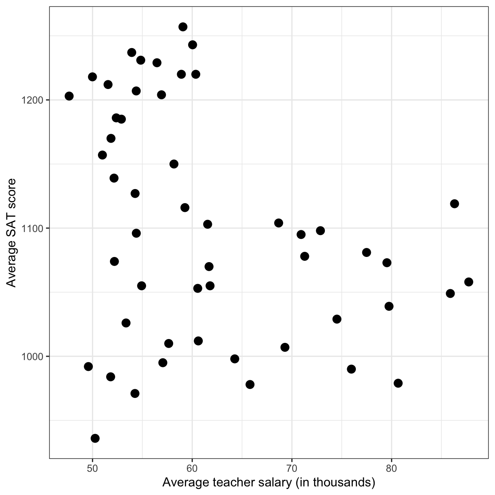

Figure 1: Density plot of the average state SAT scores.
2. Examine the structure and formatting of Table 1 at http://zief0002.github.io/epsy-8251/misc/creating-tables/creating-tables.html. Mimic the format and structure of this table to create a table to present the numerical summary information for the distributions of SAT total scores and salaries. Provide the same measures for these variables as is given in Table 1 in the article. Re-create the formatting of Table 1 as closely as you can. Finally, make sure the table you create also has an appropriate caption.
Means (M) and standard deviations (SD) for the
state-level average SAT scores and average teacher salaries.
Measure
M
SD
Average SAT score
1100.35294
89.24434
Average teacher salary
61.73929
10.82507
3. Create a scatterplot of the distribution of SAT total scores (Y) conditioned on teacher salaries (X). Make sure your plot has a caption.
Code
ggplot(data = educ, aes(x = salary_thousand, y = sat_total)) +geom_point(size =3) +theme_bw() +xlab("Average teacher salary (in thousands)") +ylab("Average SAT score")

Figure 2: Scatterplot displaying the relationship between the state-level average teacher salary and average SAT score.
4. Describe the relationship between SAT total scores and teacher salaries. Be sure to comment on the structural form, direction and strength of the relationship. Also comment on any potential observations that deviate from following this relationship (unusual observations or clusters of observations).
There seems to be a moderate linear, negative relationship between average teacher salaries and average SAT scores. There do not seem to be any unusual observations (states) that deviate greatly from this relationship.
5. Regress total SAT scores on teacher salaries. Write the fitted equation using Equation Editor (or some other program that correctly types mathematical expressions).
9. Compute and report the predicted mean total SAT score for Minnesota students based on the average teacher salary in the state using the fitted regression equation. Show your work for full credit.
11. Explain what the sign and magnitude of the residual value you computed in Question 10 tells you about how Minnesota’s mean SAT score compares to the mean SAT score for states having the same average teacher salary as Minnesota.
Minnesota’s residual of \(+150\) indicates that Minnesota’s average SAT score of 1257 is 150 points ABOVE the predicted mean SAT score for states having the an average teacher salary of $59,069.